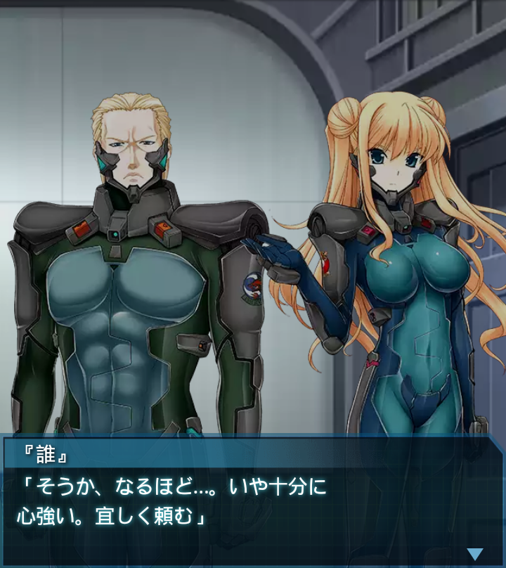

ウォーケン少佐
「では、改めて自己紹介といこう」ウォーケン少佐
「私は米国陸軍第６６戦術機甲大隊所属、アルフレッド・ウォーケン
少佐だ」
ウォーケン少佐
「こちらは米国海兵隊のリリア・シェルベリ中尉。我々は軌道降下
作戦に同行すべく赴いた」
『誰』
「これほどの規模となれば作戦の成功確率も大幅に上がる！
有難い事です、少佐」
ウォーケン少佐
「…残念だがその期待に応える事はやや難しい」
ウォーケン少佐
「我が米国は、世界融合事変により、国内各地に複数のハイヴを
抱える最前線国家となった」
ウォーケン少佐
「通信も交通も分断し、軍の機能…いや、国家としての機能すらも維持
するのが困難な状況だ」
ウォーケン少佐
「無論、物流も滞り、市民生活は元より兵器の運用も脅かされている。
これではＢＥＴＡと戦えない」
ウォーケン少佐
「そこで政府は、現在衛星軌道上に建造中の第五計画用施設から、資材
の調達を行う事を決定した」
ウォーケン少佐
「我々は貴官らと宇宙に発つが、その後は別行動となる。これは
香月司令も了承済みだ」
ウォーケン少佐
「その代わり、軌道降下に必要なシャトル等の配備には最大限の
協力をするという条件だ」
『誰』
「そう…ですか。米国が今そんな事になっていたとは…」
ウォーケン少佐
「しかし、その謎を解き明かす為に貴官らがオリジナルハイヴに再び
臨むという事も理解はしている」

ウォーケン少佐
「米国としても根本問題の解決こそ最優先と位置付けているのだ。
そこで――」
リリア
「我々海兵隊が、軌道降下作戦に参加します。小規模ではありますが
お力にはなれるでしょう」

『誰』
「そうか、なるほど…。いや十分に心強い。宜しく頼む」
リリア
「早速ですが大尉、時間がありません。連携確認のため、シミュ
レーター訓練をお願いします」

『誰』
「そうだな、休んでいる暇はない。１５分後にシミュレータールームに
集合だ」